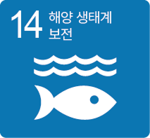
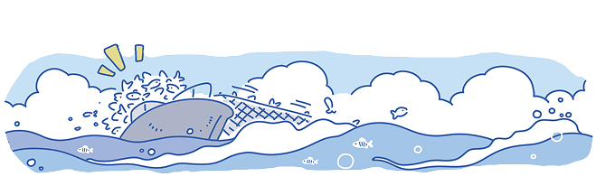

스스로 해결하기
불법 조업 의심 선박 군집화
AIS 기반 데이터로 불법 조업 문제를 해결하기 위한 인공지능을 만들어 보자.
해결할 문제

전 세계 곳곳에서 벌어지고 있는 불법 조업은 자원 고갈과 해양 생태계 파괴에 큰 영향을 미치고 있다. 해양 생태계 보존을 위해 세계 조업 관찰 웹 사이트인 Global Fishing Watch에서 제공하는 데이터로 불법 조업 문제를 해결하기 위한 인공지능 모델을 만든다.

이 문제를 해결하고자 할 때, 기계학습의 목적과 예측하고자 하는 값을 참고하여 기계학습의 유형을 선정해 보자.
-
기계학습의 목적선박 군집화
-
예측하고자 하는 값불법 조업의 경향성
기계학습 유형